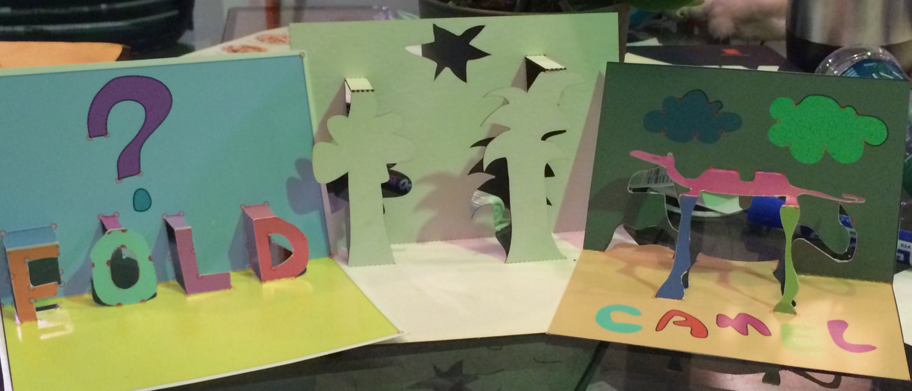
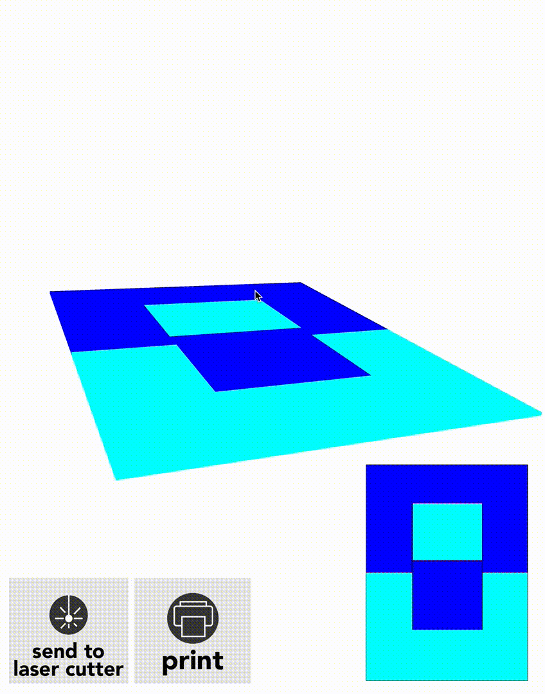
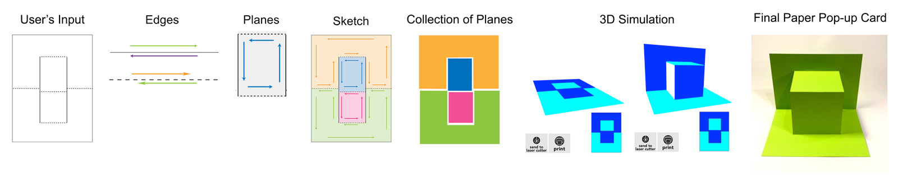
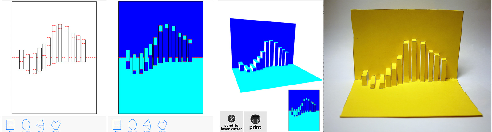
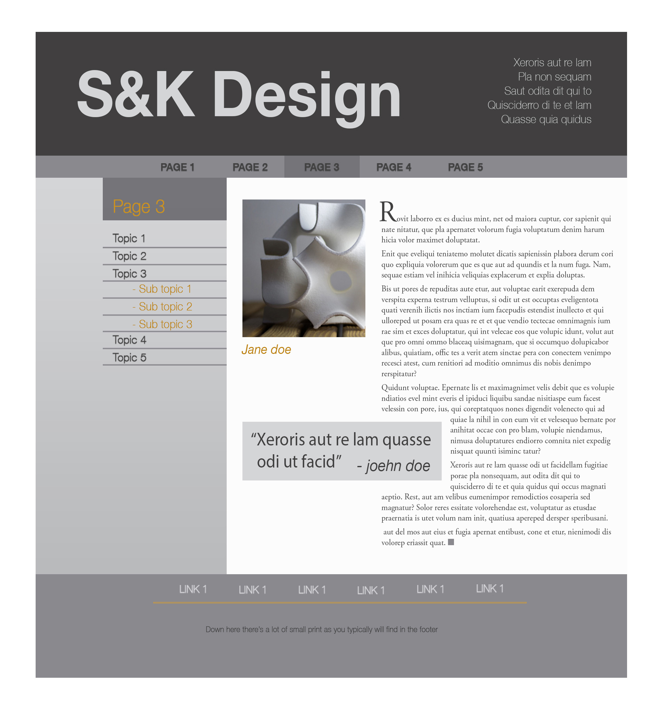
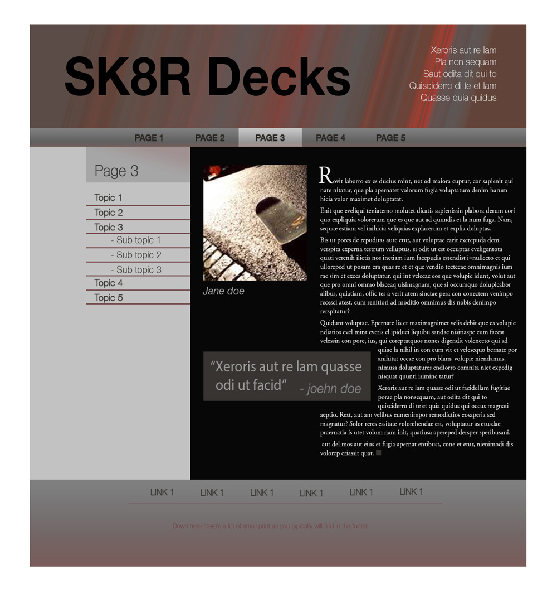
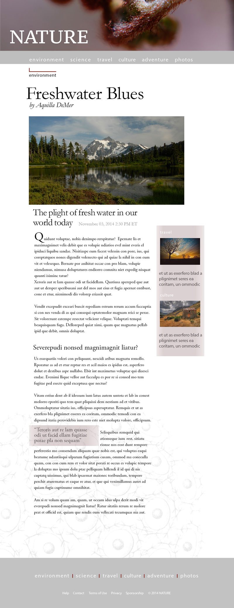
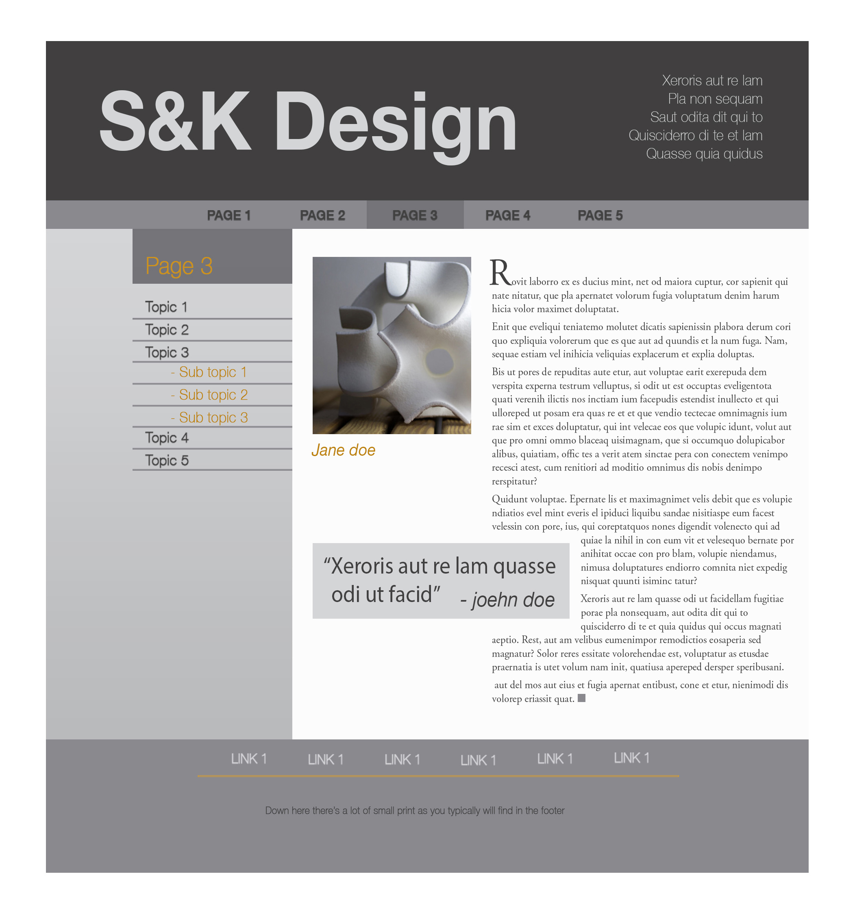
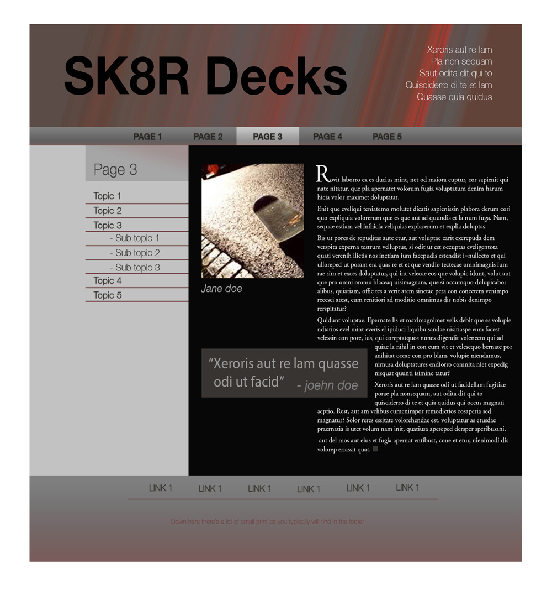
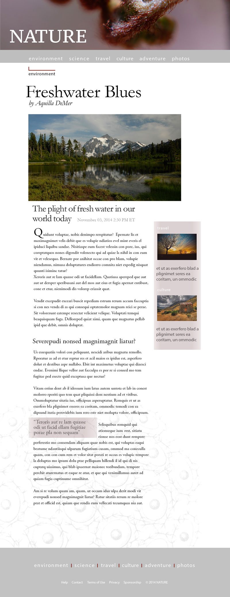

MS Thesis
iPad app: Swift, Scenekit, CocoaPods

Foldlings was a joint project where we created interative 3D pop-up card design app. The user sketchs a 2D design and our iPad app converts that design into a 3D representation in kirigami pop-up form. For this project I was responsible for
transforming the 2D shapes drawn by the user into 3D planes, rendering the interactive 3D simulation, and creating the svg file to send to a laser cutter. You can read more here.

To create 3D plane objects from user's sketch, we reduce the sketch into edges and created a Swift method to follow those edges forming planes using the Polygon Walk method. Those planes are then linked together into an acyclic graph which
defines how each plane behaves in the 3D simulation. After the user is satisfied with their card, they can create an svg file to send to a laser cutter and have the physical card in seconds. Full code here.
The Process


The GetPlanes Method:
This Swift method creates Plane objects that are passed to Scenekit to become 3-D planes from 2-D Edge objects by using the Polygon Walk method. This function iterates through all the edges connecting endpoints to startpoints until it forms
a closed shape. There are many constraints including whether the edge has been previously visited or if the shape created is just a line. The function also sets certain attributes of the newly created Plane object such as the number of folds
and the top and bottom edges.
// does a traversal of all the edges to find all the planes
func getPlanes(){
self.visited = []
planelist = []
for (i, start) in enumerate(self.edges)//traverse edges
{
//keep a fold count by plane to catch flaps and holes
var foldcount = 0
var folds:[Edge] = []
if start.dirty {
var p : [Edge] = []//plane
var isContained = contains(self.visited, start)
if !isContained// skipped over already visited edges
{ p.append(start)
if start.kind == .Fold{
foldcount++
folds.append(start)
}
// set the start as top and bottom edge
var topEdge : Edge = start
var bottomEdge : Edge = start
self.visited.append(start)
var closest = self.getClosest(start)// get closest adjacent edge
// check if twin has not been crossed and not in plane
while !CGPointEqualToPoint(closest.end, start.start) || contains(p, closest)
{ p.append(closest)
if closest.kind == .Fold{
foldcount++
folds.append(closest)
}
//mark if this is a top edge here by comparing y's, this shold be the midpoint
if(makeMid(closest.start.y, closest.end.y) < makeMid(topEdge.start.y, topEdge.end.y)) {
topEdge = closest
}
//mark if this is a bottom edge here by comparing y's, this shold be the midpoint
if(makeMid(closest.start.y, closest.end.y) > makeMid(bottomEdge.start.y, bottomEdge.end.y)) {
bottomEdge = closest
}
self.visited.append(closest)
closest = self.getClosest(closest)
}
//if the edge is the last edge and the edge isn't start edge
if CGPointEqualToPoint(closest.end, start.start) && !CGPointEqualToPoint(start.start, start.end)
{ p.append(closest)
self.visited.append(closest)
}
//// if you didn't cross twin or if the edge is one point, make it a plane
if !closest.crossed || CGPointEqualToPoint(start.start, start.end)
{ var plane = Plane(edges: p)
//set plane's top and bottom edge
plane.topEdge = topEdge
plane.bottomEdge = bottomEdge
//set foldcount
plane.foldcount = foldcount
//set plane for edges
plane.edges.map({$0.plane = plane})
// add planes to planelist
planelist.insertIntoOrdered(plane, ordering: {makeMid($0.topEdge.start.y, $0.topEdge.end.y) < makeMid($1.topEdge.start.y, $1.topEdge.end.y)})
}
closest.crossed = false
}
}
}
self.planes.linkPlanes(planelist)
}

 




